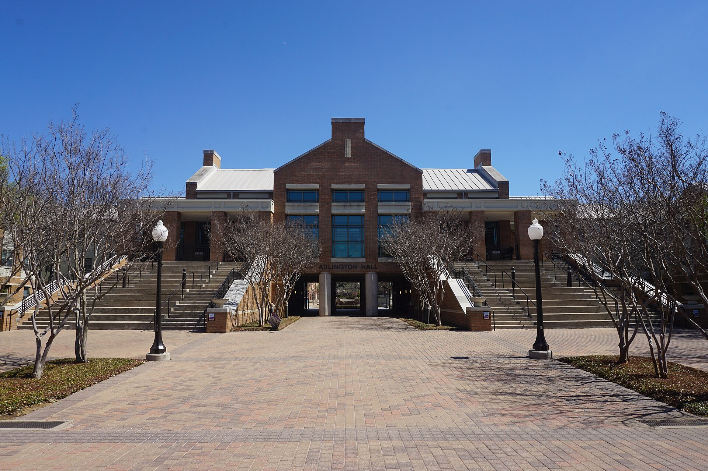

Safe streets, by text
A 10-question SMS survey on Twilio for NoVA Families for Safe Streets, with GPT-4o-mini geocoding the answers.


A travel magazine about my work as a Virginia Tech CS student, class of December 2026.
BlacksburgThe SQL gym 170 students worked out in
RichmondHow to catch a phishing site in real time
Arlington, TXFlying a 3D-printed plane with an Xbox controller
DBWorkout turns database homework into a workout, with reps, feedback and a leaderboard.
I joined Virginia Tech's hAIce Lab in Spring 2025 and became DBWorkout's student lead. I designed its PostgreSQL schema, wrote authentication for 80 API endpoints and shipped its Kubernetes deploys on VT's Rancher.
Today I lead a 16-person team adding VT login, Canvas LTI 1.3 and accessibility. Our papers were presented at FIE 2026 and FutureHCI 2026.

170 students, 90% said it helped them learn.

300+ signals, one verdict, and the reason why.
An AI browser extension that spots phishing in real time and teaches you what gave it away.
Through the CCI PREP internship, with weekly mentoring from Parsons engineers, I trained XGBoost models on AWS SageMaker and built the Chrome extension that talks to Amazon API Gateway.
We demoed it live at the Commonwealth Cyber Initiative Symposium 2026 in Richmond.
A 10-question SMS survey on Twilio for NoVA Families for Safe Streets, with GPT-4o-mini geocoding the answers.
Control systems for a 3D-printed plane at UT Arlington, steered with an Xbox controller over radio.

At the IDOPt Lab I explore design spaces for an eVTOL, a Boeing 777 and an F-16, and visualize tens of thousands of designs on the web.